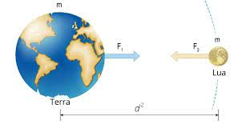
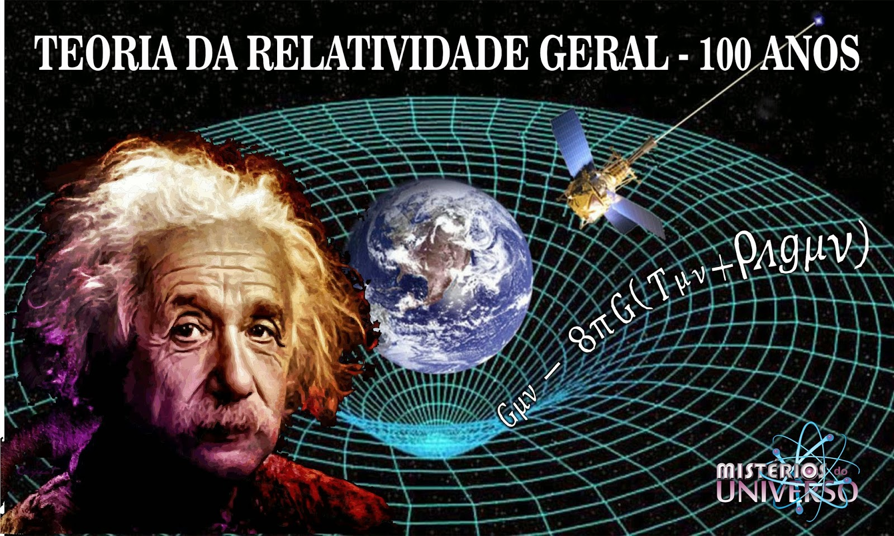

A física tem sido uma disciplina fundamental para a humanidade, trazendo grandes descobertas e avanços ao longo dos séculos. Essas descobertas revolucionaram nossa compreensão do universo e tiveram um impacto significativo em várias áreas da ciência e da tecnologia.
Uma das maiores descobertas da física foi a lei da gravitação universal, formulada por Isaac Newton no século XVII. Essa teoria descreve a atração entre corpos massivos e fornece uma explicação para os movimentos planetários. A compreensão da gravidade permitiu a exploração espacial e possibilitou a criação de tecnologias como satélites e sondas espaciais.
No século XX, a teoria da relatividade, proposta por Albert Einstein, trouxe uma mudança radical na compreensão do espaço, do tempo e da gravidade. A relatividade especial, publicada em 1905, estabeleceu que as leis da física são as mesmas para todos os observadores em movimento relativo constante. Já a relatividade geral, formulada em 1915, descreve a gravidade como uma curvatura do espaço-tempo causada pela presença de matéria e energia. Essas teorias tiveram implicações profundas, desde a compreensão da expansão do universo até a previsão de fenômenos como os buracos negros.
Outra descoberta importante foi a teoria quântica, que revolucionou nossa compreensão do mundo subatômico. A mecânica quântica, desenvolvida no início do século XX por cientistas como Max Planck, Niels Bohr e Werner Heisenberg, descreve o comportamento das partículas elementares em termos de probabilidades. Essa teoria permitiu o desenvolvimento da eletrônica e das tecnologias de informação, incluindo os computadores quânticos, além de fornecer uma base para avanços na física de materiais e na medicina.

Além disso, a física de partículas tem revelado a existência de partículas fundamentais, como o elétron, o próton e o neutrino, além de partículas mais exóticas, como o bóson de Higgs, descoberto em 2012. Essas descobertas têm nos ajudado a compreender a estrutura fundamental da matéria e as forças que governam o universo.

Em resumo, a física nos trouxe grandes descobertas que transformaram nossa visão do mundo. Desde as leis da gravitação universal até as teorias da relatividade e a mecânica quântica, esses avanços têm impactado profundamente nosso conhecimento científico e tiveram aplicações práticas em diversos campos. Através dessas descobertas, continuamos a explorar e desvendar os segredos do universo que nos cerca.